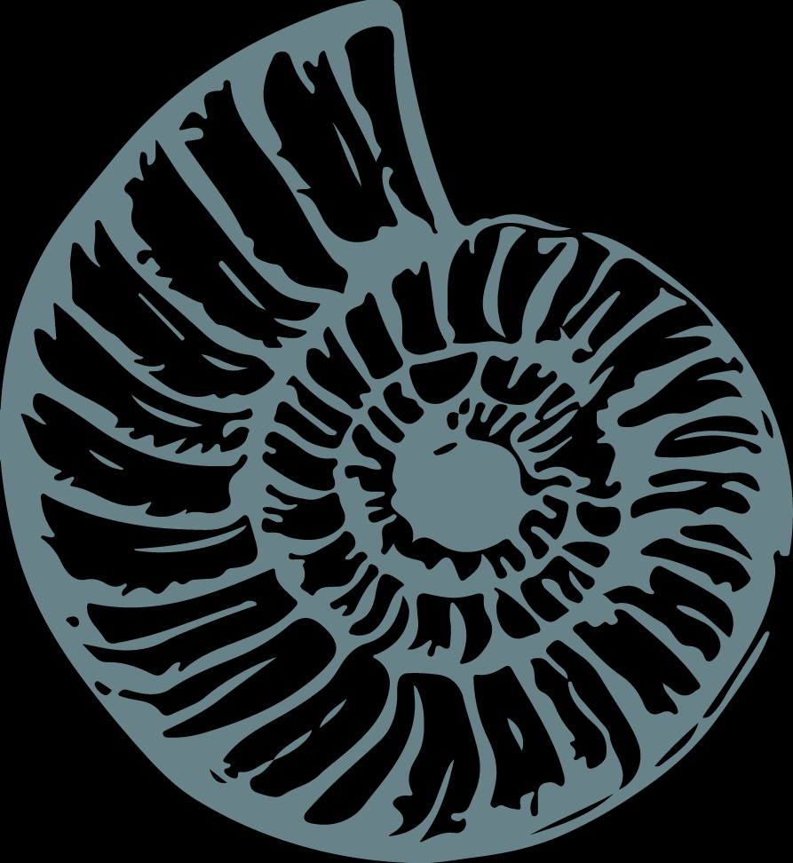

Siderno es una marca que busca crear una identidad propia a través del diseño y una mirada simple y cercana.
Siderno
Un espacio donde el diseño y la inspiración se encuentran.
Sobre Siderno
Lo que encontrarás en Siderno
- Productos
- Inspiración
- Diseño
- Ideas
Inspiración
